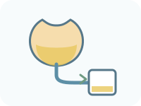
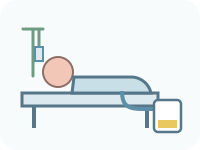
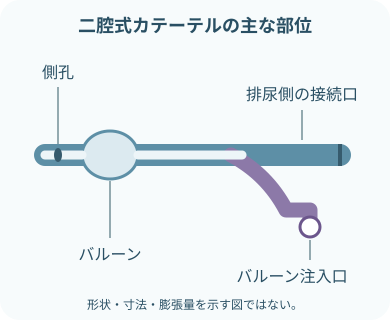
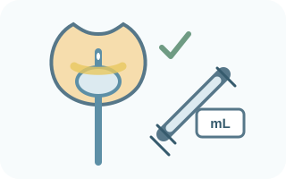
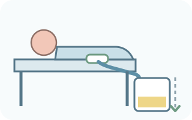
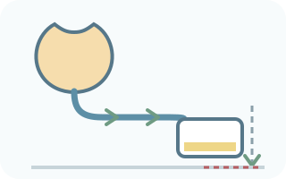
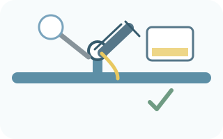
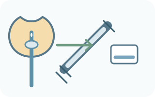
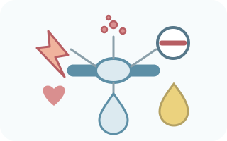

注意事項
- 成人の経尿道的な膀胱留置カテーテル
- 急性期医療での挿入、日常管理、抜去
- 小児、間欠導尿、膀胱瘻、持続膀胱洗浄は対象外
- 尿道損傷が疑われる外傷、尿道手術後、狭窄・挿入困難歴は先に報告
- 材質、ラテックス、消毒薬、潤滑剤のアレルギーを確認
- 抵抗、強い疼痛、出血があれば無理に進めない
- 膀胱内と確認できる前にバルーンを膨らませない
目的・主な適応




代替手段が使えるかも確認。間欠導尿、体外式集尿器、排尿誘導などを患者ごとに検討する。
観察項目


混濁や臭いだけでCAUTIと決めない。発熱、悪寒、下腹部痛・側腹部痛、循環や意識の変化などを合わせ、尿検査・培養の必要性を判断する。
必要物品



- 膀胱留置用カテーテル
- 閉鎖式採尿バッグ
- 滅菌手袋
- 滅菌ドレープ
- 滅菌綿球または滅菌ガーゼ
- 滅菌セッシ
- 尿道口清拭用の消毒薬または滅菌溶液
- 単回使用の滅菌潤滑剤
- バルーン用シリンジ
- 製品指定のバルーン膨張液
- カテーテル固定具
- 防水シート
- 非滅菌手袋
- エプロンなど必要なPPE
- 廃棄物袋・容器
- 必要時、尿検体容器
サイズ、材質、洗浄液、潤滑剤、膨張液、バルーン容量は製品と施設で異なる。開封前にラベル・電子添文を確認する。
挿入の手順
 適応・本人・リスクを確認
適応・本人・リスクを確認指示、目的、アレルギー、排尿歴、尿道損傷や挿入困難の可能性を照合。説明して同意を得る。
 プライバシーと体位を整える
プライバシーと体位を整える必要部位だけ露出。防水シートを敷き、手指衛生と必要なPPEを行う。
 無菌野を作る
無菌野を作る物品を無菌的に開き、滅菌手袋とドレープを使用。閉鎖式回路を保つ準備をする。
 尿道口を清拭し、十分に潤滑
尿道口を清拭し、十分に潤滑清拭方向と使用液は院内手順へ。清潔にした先端とカテーテルを汚染しない。
 カテーテルをやさしく進める
カテーテルをやさしく進める尿道の走行に沿って挿入。抵抗、強い痛み、出血があれば止め、無理に押し込まない。

膀胱内を確認してバルーンを膨張尿流出後も必要な深さまで進める。膀胱内と確認後、表示どおりの液・量をゆっくり注入。

固定し、尿が流れる位置へ男性は包皮を元に戻す。牽引なく固定し、回路を屈曲させず、バッグを膀胱より低く床から離す。実施内容を記録。
留置中の管理

閉鎖式回路を保つ
カテーテルとバッグを不用意に外さない。
接続外れ、漏れ、無菌操作の破綻があれば、院内手順に沿ってカテーテルと採尿バッグを無菌的に交換する。

重力で流れる道を作る
膀胱 → チューブ → バッグを下り勾配に。
屈曲、体や柵による圧迫、低い位置のたるみを直す。バッグは膀胱より低く、床に置かない。
バッグを定期的に空にする
患者ごとの清潔な容器へ排液。
排液口を容器や床へ触れさせず、飛散を避ける。量と性状を観察・記録する。

日常の清潔と固定
入浴・清拭時の通常の衛生ケアが基本。
CAUTI予防だけを目的に、留置中の尿道口へ消毒薬を反復使用しない。固定部と皮膚も観察する。

尿検体は採尿ポートから
少量の新鮮尿は、消毒したポートから無菌的に採取。
尿培養をバッグ内の貯留尿から採らない。製品と検査部門の手順を確認する。
抜去の手順
 抜去の指示・条件を確認
抜去の指示・条件を確認留置継続の必要性、抜去時刻、再留置時の対応を確認。説明し、バッグ内尿量を記録。
 物品と体位を整える
物品と体位を整える記録されたバルーン量に合うシリンジ、防水シート、手袋、清拭物品、廃棄物袋を準備。

バルーンを完全に収縮製品の方法で膨張液を戻す。量を確認。戻らない場合は引かず、無理な吸引や切断をしない。
 呼気に合わせてやさしく抜く
呼気に合わせてやさしく抜く力を抜いてもらい、ゆっくり抜去。抵抗、強い痛み、出血があれば止めて報告。
 抜去後を観察・記録
抜去後を観察・記録カテーテルとバルーンの破損・欠損、尿道口、排尿時刻・量・症状を確認。尿閉が疑われれば膀胱容量を評価。
通常、抜去前のクランプは必要ない。抜去後の観察時間、膀胱スキャン、再導尿基準は院内手順を優先する。
関連知識

バルーン量は性別で決めない
カテーテル本体・ファネル・ラベル・電子添文の表示が基準。
10mLの製品もあるが、すべてに共通しない。膨張液の種類も製品指定を確認する。

尿が出ないとき
患者 → チューブ → バッグの順に確認。
循環・水分出納、膀胱部症状、屈曲・圧迫・たるみ、バッグ高、血塊・沈渣、位置異常を評価。自己判断で洗浄しない。

「定期的に行う」とは限らない
固定日数での交換、予防的な膀胱洗浄、抗菌薬投与は原則ルーチンにしない。
閉塞、感染、回路破綻などの臨床的理由と製品の使用期間を合わせて判断する。

主な合併症
CAUTI、尿道損傷、血尿、閉塞、尿漏れ、膀胱けいれん。
長期留置ではびらん・圧迫損傷、結石・付着物、活動制限、自己抜去にも注意する。